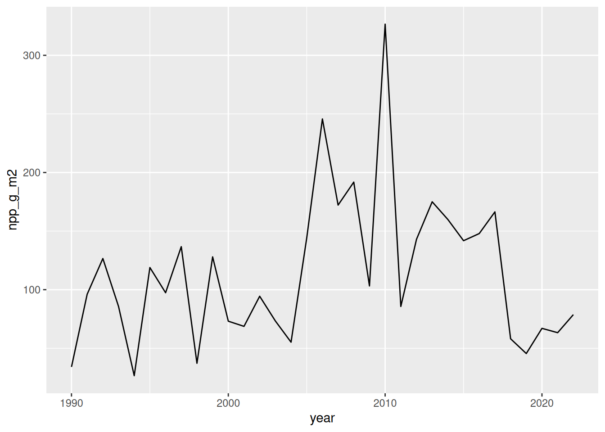
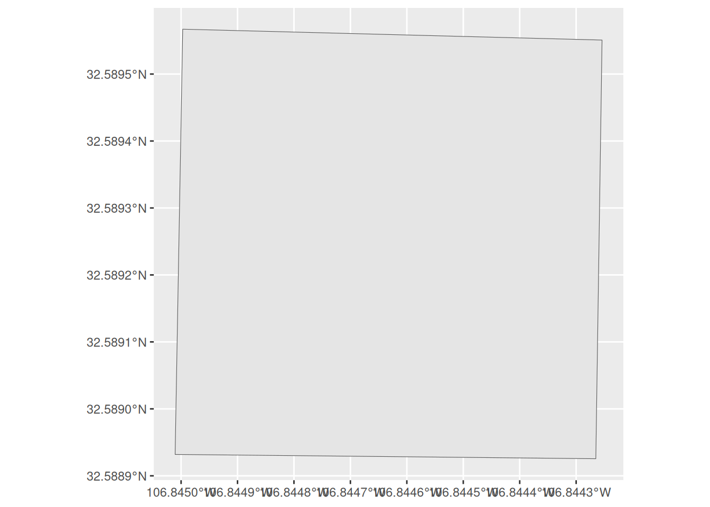
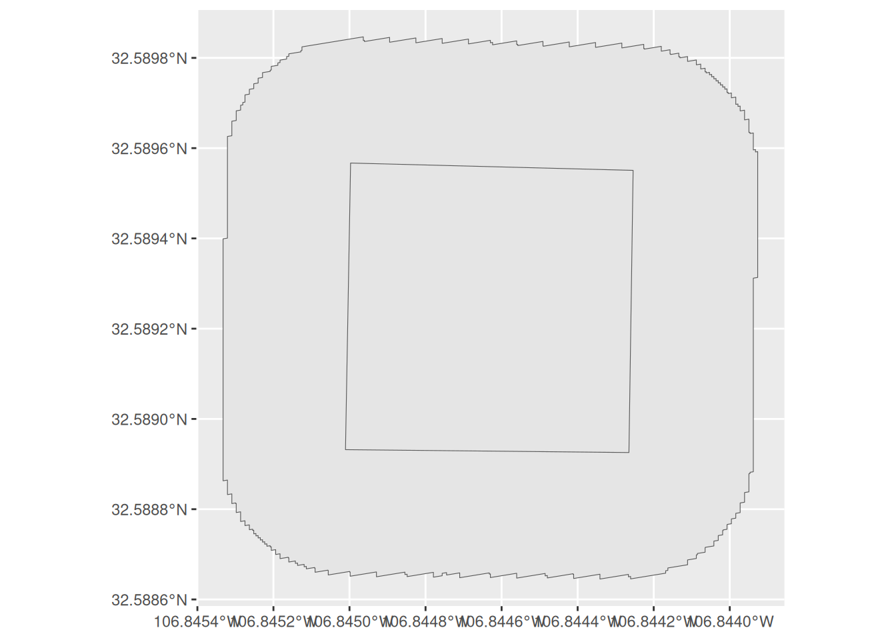
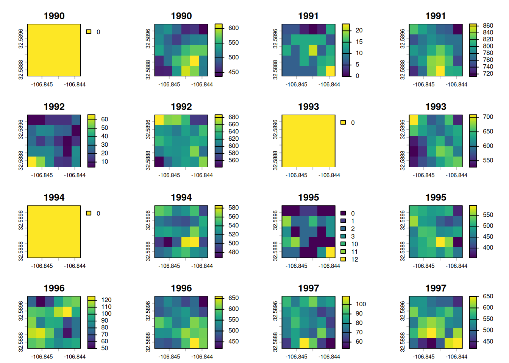
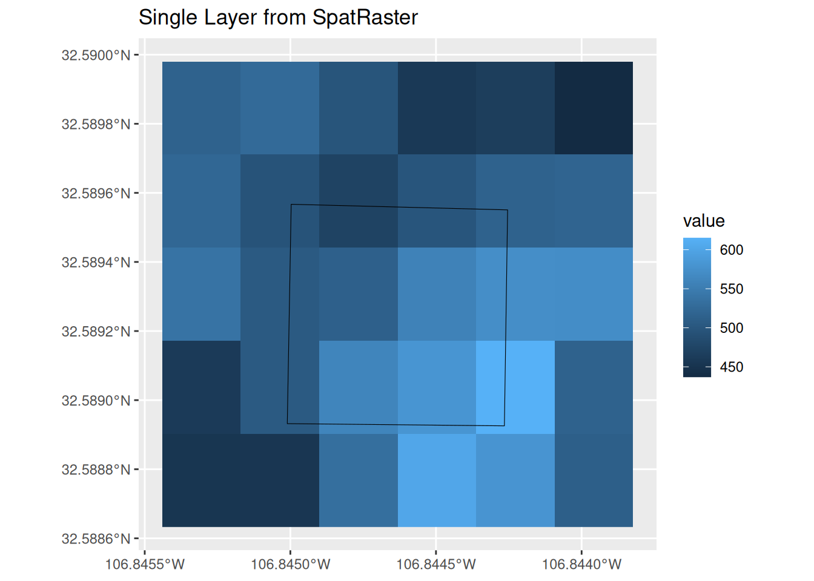
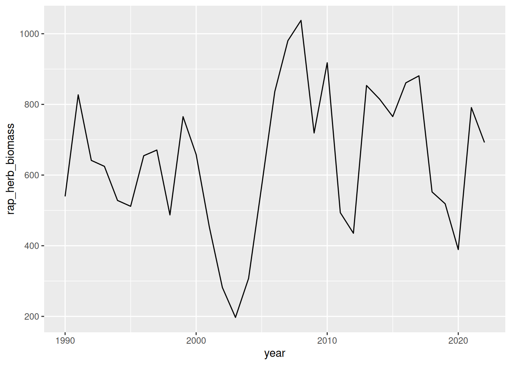
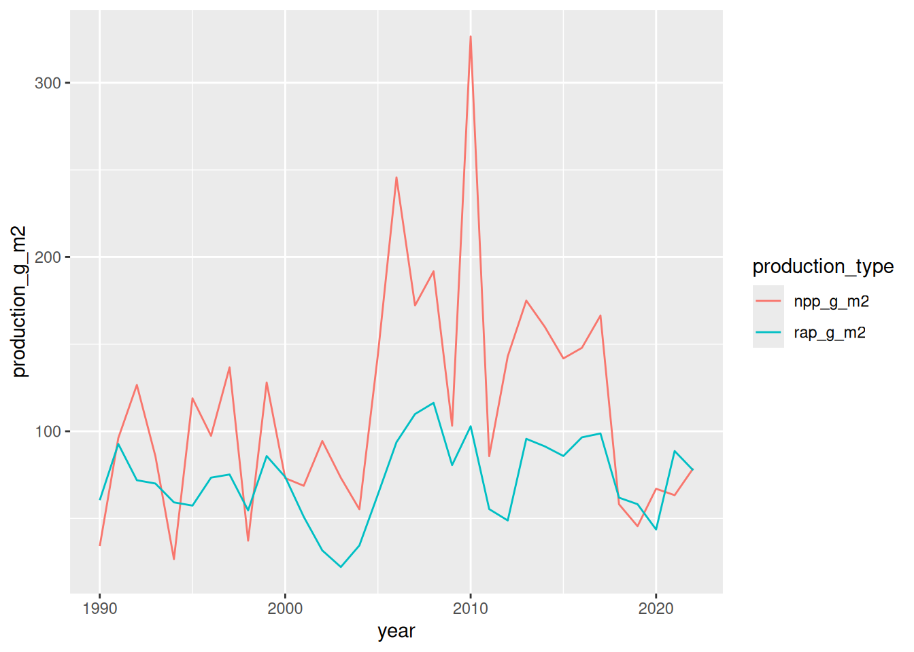
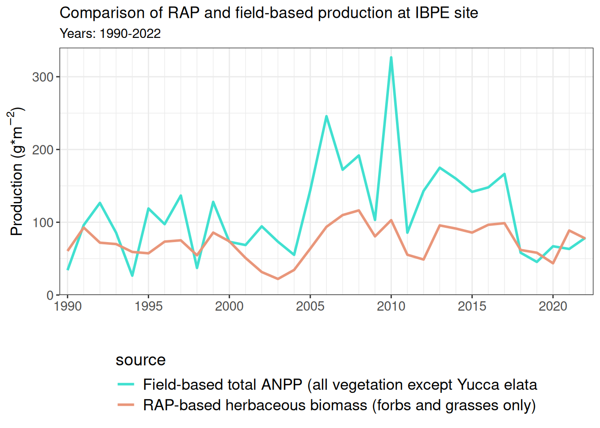

library(tidyverse)── Attaching core tidyverse packages ──────────────────────── tidyverse 2.0.0 ──
✔ dplyr 1.2.1 ✔ readr 2.2.0
✔ forcats 1.0.1 ✔ stringr 1.6.0
✔ ggplot2 4.0.3 ✔ tibble 3.3.1
✔ lubridate 1.9.5 ✔ tidyr 1.3.2
✔ purrr 1.2.2
── Conflicts ────────────────────────────────────────── tidyverse_conflicts() ──
✖ dplyr::filter() masks stats::filter()
✖ dplyr::lag() masks stats::lag()
ℹ Use the conflicted package (<http://conflicted.r-lib.org/>) to force all conflicts to become errorslibrary(EDIutils)
library(sf)Linking to GEOS 3.12.1, GDAL 3.8.4, PROJ 9.4.0; sf_use_s2() is TRUElibrary(terra)terra 1.9.46
Attaching package: 'terra'
The following object is masked from 'package:tidyr':
extractlibrary(rapr)
library(tidyterra)
Attaching package: 'tidyterra'
The following object is masked from 'package:stats':
filter# Data access at EDI requires authentication. The easiest way is to create
# an API key at https://auth.edirepository.org. Once you have that, place
# it in your script. Below, we're getting it from an environmental variable,
# but you can replace the "Sys.getenv" part with your actual key.
mykey <- Sys.getenv("EDI_API_KEY")
# Log in to EDI rogrammatically with an API key
EDIutils::login(key = mykey)Logged in with EDI-API key.# Set the dataset ID
datasetID <- "knb-lter-jrn.210011003.106"
# Read the list of "entities" in the dataset
ents <- read_data_entity_names(datasetID)
# Read the raw entity data
raw <- read_data_entity(datasetID, ents[1, "entityId"])
# Now read the raw data as a CSV
anpp_data <- readr::read_csv(file = raw)Rows: 495 Columns: 4
── Column specification ────────────────────────────────────────────────────────
Delimiter: ","
chr (2): zone, site
dbl (2): year, npp_g_m2
ℹ Use `spec()` to retrieve the full column specification for this data.
ℹ Specify the column types or set `show_col_types = FALSE` to quiet this message.# Explore the data a little
head(anpp_data)# A tibble: 6 × 4
year zone site npp_g_m2
<dbl> <chr> <chr> <dbl>
1 1990 C CALI 28.6
2 1990 C GRAV 85.7
3 1990 C SAND 103.
4 1990 G BASN 77.2
5 1990 G IBPE 34.1
6 1990 G SUMM 53.7unique(anpp_data$site) [1] "CALI" "GRAV" "SAND" "BASN" "IBPE" "SUMM" "NORT" "RABB" "WELL" "COLL"
[11] "SMAL" "TOBO" "EAST" "TAYL" "WEST"length(unique(anpp_data$site))[1] 15# Now make a simple plot
g <- ggplot(data=anpp_data, aes(x=year, y=npp_g_m2, col=site)) +
geom_line()
# Show it
g
# Now lets subset and plot site==IBPE
ibpe_anpp <- anpp_data |> filter(site=="IBPE")
# Check avialble years
range(ibpe_anpp$year) # 1990 to 2022[1] 1990 2022# Quick graph of the data
ggplot(ibpe_anpp, aes(x = year, y = npp_g_m2)) +
geom_line() 
# Import shapefile of NPP sites
# This can be downloaded from the Jornada Geoportal if you already
# have access
NPP_sf <- st_read("../../data/Jornada_prj011_polygons.shp")Reading layer `Jornada_prj011_polygons' from data source
`/home/runner/work/jeds/jeds/data/Jornada_prj011_polygons.shp'
using driver `ESRI Shapefile'
Simple feature collection with 15 features and 6 fields
Geometry type: POLYGON
Dimension: XY
Bounding box: xmin: -11895750 ymin: 3827727 xmax: -11878990 ymax: 3851369
Projected CRS: WGS 84 / Pseudo-Mercator# Look at the columns of the data in the shapefile
glimpse(NPP_sf)Rows: 15
Columns: 7
$ ogc_fid <int> 1, 2, 3, 4, 5, 6, 7, 8, 9, 10, 11, 12, 13, 14, 15
$ zone_ <chr> "C", "C", "T", "T", "T", "P", "M", "P", "G", "G", "M", "P",…
$ site <chr> "GRAV", "SAND", "WEST", "EAST", "TAYL", "TOBO", "NORT", "CO…
$ keyfield <chr> "CGRAV", "CSAND", "TWEST", "TEAST", "TTAYL", "PTOBO", "MNOR…
$ shape_leng <dbl> 0.00272176, 0.00277603, 0.00275642, 0.00272807, 0.00274314,…
$ shape_area <dbl> 4.57587e-07, 4.74241e-07, 4.71936e-07, 4.62392e-07, 4.67385…
$ geometry <POLYGON [m]> POLYGON ((-11886843 3827803..., POLYGON ((-11887862 3831154…# Subset IBPE site
IBPE_sf <- NPP_sf %>%
dplyr::filter(site == "IBPE") %>%
st_transform("EPSG:4326")
# Check coordinate reference system
st_crs(IBPE_sf)Coordinate Reference System:
User input: EPSG:4326
wkt:
GEOGCRS["WGS 84",
ENSEMBLE["World Geodetic System 1984 ensemble",
MEMBER["World Geodetic System 1984 (Transit)"],
MEMBER["World Geodetic System 1984 (G730)"],
MEMBER["World Geodetic System 1984 (G873)"],
MEMBER["World Geodetic System 1984 (G1150)"],
MEMBER["World Geodetic System 1984 (G1674)"],
MEMBER["World Geodetic System 1984 (G1762)"],
MEMBER["World Geodetic System 1984 (G2139)"],
ELLIPSOID["WGS 84",6378137,298.257223563,
LENGTHUNIT["metre",1]],
ENSEMBLEACCURACY[2.0]],
PRIMEM["Greenwich",0,
ANGLEUNIT["degree",0.0174532925199433]],
CS[ellipsoidal,2],
AXIS["geodetic latitude (Lat)",north,
ORDER[1],
ANGLEUNIT["degree",0.0174532925199433]],
AXIS["geodetic longitude (Lon)",east,
ORDER[2],
ANGLEUNIT["degree",0.0174532925199433]],
USAGE[
SCOPE["Horizontal component of 3D system."],
AREA["World."],
BBOX[-90,-180,90,180]],
ID["EPSG",4326]]# Quick figure of IBPE site polygon
ggplot(IBPE_sf) +
geom_sf()
# Use rapr::get_rap() function to access RAP data
# Note that our shapefile is already in the "ESPG:4326" coordinate reference system
?get_rap
# Currently, RAP biomass and production data are only available as a 30m pixel product
# Each pixel is approximately 30m X 3m = 900m^2 in size
st_area(IBPE_sf) / 900 # The IBPE site is about 5.4 RAP pixels in size5.429742 [m^2]# Buffer IBPE area by 30m to ensure complete coverage
# Note that the LENGTHUNIT is already in meters
IBPE_buffer <- IBPE_sf %>%
st_buffer(dist = 30)
# Figure of IBPE site with 30m buffer
ggplot() +
geom_sf(data = IBPE_buffer) +
geom_sf(data = IBPE_sf)
# Import 30m Landsat production data
IBPE_prod30m <- get_rap(
x = IBPE_buffer,
years = c(1990:2022),
product = "vegetation-biomass",
source = "rap-30m",
sds = FALSE,
verbose = TRUE
)Processing: https://rangeland.ntsg.umt.edu/data/rap/rap-vegetation-biomass/v3/vegetation-biomass-v3-1990.tif
Processing: https://rangeland.ntsg.umt.edu/data/rap/rap-vegetation-biomass/v3/vegetation-biomass-v3-1991.tif
Processing: https://rangeland.ntsg.umt.edu/data/rap/rap-vegetation-biomass/v3/vegetation-biomass-v3-1992.tif
Processing: https://rangeland.ntsg.umt.edu/data/rap/rap-vegetation-biomass/v3/vegetation-biomass-v3-1993.tif
Processing: https://rangeland.ntsg.umt.edu/data/rap/rap-vegetation-biomass/v3/vegetation-biomass-v3-1994.tif
Processing: https://rangeland.ntsg.umt.edu/data/rap/rap-vegetation-biomass/v3/vegetation-biomass-v3-1995.tif
Processing: https://rangeland.ntsg.umt.edu/data/rap/rap-vegetation-biomass/v3/vegetation-biomass-v3-1996.tif
Processing: https://rangeland.ntsg.umt.edu/data/rap/rap-vegetation-biomass/v3/vegetation-biomass-v3-1997.tif
Processing: https://rangeland.ntsg.umt.edu/data/rap/rap-vegetation-biomass/v3/vegetation-biomass-v3-1998.tif
Processing: https://rangeland.ntsg.umt.edu/data/rap/rap-vegetation-biomass/v3/vegetation-biomass-v3-1999.tif
Processing: https://rangeland.ntsg.umt.edu/data/rap/rap-vegetation-biomass/v3/vegetation-biomass-v3-2000.tif
Processing: https://rangeland.ntsg.umt.edu/data/rap/rap-vegetation-biomass/v3/vegetation-biomass-v3-2001.tif
Processing: https://rangeland.ntsg.umt.edu/data/rap/rap-vegetation-biomass/v3/vegetation-biomass-v3-2002.tif
Processing: https://rangeland.ntsg.umt.edu/data/rap/rap-vegetation-biomass/v3/vegetation-biomass-v3-2003.tif
Processing: https://rangeland.ntsg.umt.edu/data/rap/rap-vegetation-biomass/v3/vegetation-biomass-v3-2004.tif
Processing: https://rangeland.ntsg.umt.edu/data/rap/rap-vegetation-biomass/v3/vegetation-biomass-v3-2005.tif
Processing: https://rangeland.ntsg.umt.edu/data/rap/rap-vegetation-biomass/v3/vegetation-biomass-v3-2006.tif
Processing: https://rangeland.ntsg.umt.edu/data/rap/rap-vegetation-biomass/v3/vegetation-biomass-v3-2007.tif
Processing: https://rangeland.ntsg.umt.edu/data/rap/rap-vegetation-biomass/v3/vegetation-biomass-v3-2008.tif
Processing: https://rangeland.ntsg.umt.edu/data/rap/rap-vegetation-biomass/v3/vegetation-biomass-v3-2009.tif
Processing: https://rangeland.ntsg.umt.edu/data/rap/rap-vegetation-biomass/v3/vegetation-biomass-v3-2010.tif
Processing: https://rangeland.ntsg.umt.edu/data/rap/rap-vegetation-biomass/v3/vegetation-biomass-v3-2011.tif
Processing: https://rangeland.ntsg.umt.edu/data/rap/rap-vegetation-biomass/v3/vegetation-biomass-v3-2012.tif
Processing: https://rangeland.ntsg.umt.edu/data/rap/rap-vegetation-biomass/v3/vegetation-biomass-v3-2013.tif
Processing: https://rangeland.ntsg.umt.edu/data/rap/rap-vegetation-biomass/v3/vegetation-biomass-v3-2014.tif
Processing: https://rangeland.ntsg.umt.edu/data/rap/rap-vegetation-biomass/v3/vegetation-biomass-v3-2015.tif
Processing: https://rangeland.ntsg.umt.edu/data/rap/rap-vegetation-biomass/v3/vegetation-biomass-v3-2016.tif
Processing: https://rangeland.ntsg.umt.edu/data/rap/rap-vegetation-biomass/v3/vegetation-biomass-v3-2017.tif
Processing: https://rangeland.ntsg.umt.edu/data/rap/rap-vegetation-biomass/v3/vegetation-biomass-v3-2018.tif
Processing: https://rangeland.ntsg.umt.edu/data/rap/rap-vegetation-biomass/v3/vegetation-biomass-v3-2019.tif
Processing: https://rangeland.ntsg.umt.edu/data/rap/rap-vegetation-biomass/v3/vegetation-biomass-v3-2020.tif
Processing: https://rangeland.ntsg.umt.edu/data/rap/rap-vegetation-biomass/v3/vegetation-biomass-v3-2021.tif
Processing: https://rangeland.ntsg.umt.edu/data/rap/rap-vegetation-biomass/v3/vegetation-biomass-v3-2022.tif
Cropping and writing result to memory or temporary file# Inspect the SpatRaster
IBPE_prod30mclass : SpatRaster
size : 5, 6, 66 (nrow, ncol, nlyr)
resolution : 0.0002694946, 0.0002694946 (x, y)
extent : -106.8454, -106.8438, 32.58863, 32.58998 (xmin, xmax, ymin, ymax)
coord. ref. : lon/lat WGS 84 (EPSG:4326)
source(s) : memory
names : veget~grass, veget~grass, veget~grass, veget~grass, veget~grass, veget~grass, ...
min values : 0, 437, 0, 713, 4, 542, ...
max values : 0, 615, 23, 866, 66, 688, ...
unit : lbs/acre
time (years): 1990-00-00 to 2022-00-00 (33 steps)# Check the names
names(IBPE_prod30m) [1] "vegetation-biomass_v3_1990_annual_forb_and_grass"
[2] "vegetation-biomass_v3_1990_perennial_forb_and_grass"
[3] "vegetation-biomass_v3_1991_annual_forb_and_grass"
[4] "vegetation-biomass_v3_1991_perennial_forb_and_grass"
[5] "vegetation-biomass_v3_1992_annual_forb_and_grass"
[6] "vegetation-biomass_v3_1992_perennial_forb_and_grass"
[7] "vegetation-biomass_v3_1993_annual_forb_and_grass"
[8] "vegetation-biomass_v3_1993_perennial_forb_and_grass"
[9] "vegetation-biomass_v3_1994_annual_forb_and_grass"
[10] "vegetation-biomass_v3_1994_perennial_forb_and_grass"
[11] "vegetation-biomass_v3_1995_annual_forb_and_grass"
[12] "vegetation-biomass_v3_1995_perennial_forb_and_grass"
[13] "vegetation-biomass_v3_1996_annual_forb_and_grass"
[14] "vegetation-biomass_v3_1996_perennial_forb_and_grass"
[15] "vegetation-biomass_v3_1997_annual_forb_and_grass"
[16] "vegetation-biomass_v3_1997_perennial_forb_and_grass"
[17] "vegetation-biomass_v3_1998_annual_forb_and_grass"
[18] "vegetation-biomass_v3_1998_perennial_forb_and_grass"
[19] "vegetation-biomass_v3_1999_annual_forb_and_grass"
[20] "vegetation-biomass_v3_1999_perennial_forb_and_grass"
[21] "vegetation-biomass_v3_2000_annual_forb_and_grass"
[22] "vegetation-biomass_v3_2000_perennial_forb_and_grass"
[23] "vegetation-biomass_v3_2001_annual_forb_and_grass"
[24] "vegetation-biomass_v3_2001_perennial_forb_and_grass"
[25] "vegetation-biomass_v3_2002_annual_forb_and_grass"
[26] "vegetation-biomass_v3_2002_perennial_forb_and_grass"
[27] "vegetation-biomass_v3_2003_annual_forb_and_grass"
[28] "vegetation-biomass_v3_2003_perennial_forb_and_grass"
[29] "vegetation-biomass_v3_2004_annual_forb_and_grass"
[30] "vegetation-biomass_v3_2004_perennial_forb_and_grass"
[31] "vegetation-biomass_v3_2005_annual_forb_and_grass"
[32] "vegetation-biomass_v3_2005_perennial_forb_and_grass"
[33] "vegetation-biomass_v3_2006_annual_forb_and_grass"
[34] "vegetation-biomass_v3_2006_perennial_forb_and_grass"
[35] "vegetation-biomass_v3_2007_annual_forb_and_grass"
[36] "vegetation-biomass_v3_2007_perennial_forb_and_grass"
[37] "vegetation-biomass_v3_2008_annual_forb_and_grass"
[38] "vegetation-biomass_v3_2008_perennial_forb_and_grass"
[39] "vegetation-biomass_v3_2009_annual_forb_and_grass"
[40] "vegetation-biomass_v3_2009_perennial_forb_and_grass"
[41] "vegetation-biomass_v3_2010_annual_forb_and_grass"
[42] "vegetation-biomass_v3_2010_perennial_forb_and_grass"
[43] "vegetation-biomass_v3_2011_annual_forb_and_grass"
[44] "vegetation-biomass_v3_2011_perennial_forb_and_grass"
[45] "vegetation-biomass_v3_2012_annual_forb_and_grass"
[46] "vegetation-biomass_v3_2012_perennial_forb_and_grass"
[47] "vegetation-biomass_v3_2013_annual_forb_and_grass"
[48] "vegetation-biomass_v3_2013_perennial_forb_and_grass"
[49] "vegetation-biomass_v3_2014_annual_forb_and_grass"
[50] "vegetation-biomass_v3_2014_perennial_forb_and_grass"
[51] "vegetation-biomass_v3_2015_annual_forb_and_grass"
[52] "vegetation-biomass_v3_2015_perennial_forb_and_grass"
[53] "vegetation-biomass_v3_2016_annual_forb_and_grass"
[54] "vegetation-biomass_v3_2016_perennial_forb_and_grass"
[55] "vegetation-biomass_v3_2017_annual_forb_and_grass"
[56] "vegetation-biomass_v3_2017_perennial_forb_and_grass"
[57] "vegetation-biomass_v3_2018_annual_forb_and_grass"
[58] "vegetation-biomass_v3_2018_perennial_forb_and_grass"
[59] "vegetation-biomass_v3_2019_annual_forb_and_grass"
[60] "vegetation-biomass_v3_2019_perennial_forb_and_grass"
[61] "vegetation-biomass_v3_2020_annual_forb_and_grass"
[62] "vegetation-biomass_v3_2020_perennial_forb_and_grass"
[63] "vegetation-biomass_v3_2021_annual_forb_and_grass"
[64] "vegetation-biomass_v3_2021_perennial_forb_and_grass"
[65] "vegetation-biomass_v3_2022_annual_forb_and_grass"
[66] "vegetation-biomass_v3_2022_perennial_forb_and_grass"# Use the default terra::plot() function to explore the data
# Plots the first 16 rasters
plot(IBPE_prod30m)
# Graph the second raster with ggplot and geom_spatraster()
# Overlay the IBPE site polygon
ggplot() +
geom_spatraster(data = IBPE_prod30m[[2]]) +
geom_sf(data = IBPE_sf, col = "black", fill = NA) +
labs(title = "Single Layer from SpatRaster") 
# Use the terra::extract() function to calculate mean biomass at the IBPE site for each raster
# Using exact = TRUE will caclualte a weigthed mean that uses partial pixels in the site boundary
# Using exact = FALSE (default) will only use the pixels whose centroids are within the site boundary (4 pixels in this case)
rap_biomass_extract <- terra::extract(IBPE_prod30m, IBPE_sf, fun = "mean", exact = TRUE)
# Check the names of the extracted values
names(rap_biomass_extract) [1] "ID"
[2] "vegetation-biomass_v3_1990_annual_forb_and_grass"
[3] "vegetation-biomass_v3_1990_perennial_forb_and_grass"
[4] "vegetation-biomass_v3_1991_annual_forb_and_grass"
[5] "vegetation-biomass_v3_1991_perennial_forb_and_grass"
[6] "vegetation-biomass_v3_1992_annual_forb_and_grass"
[7] "vegetation-biomass_v3_1992_perennial_forb_and_grass"
[8] "vegetation-biomass_v3_1993_annual_forb_and_grass"
[9] "vegetation-biomass_v3_1993_perennial_forb_and_grass"
[10] "vegetation-biomass_v3_1994_annual_forb_and_grass"
[11] "vegetation-biomass_v3_1994_perennial_forb_and_grass"
[12] "vegetation-biomass_v3_1995_annual_forb_and_grass"
[13] "vegetation-biomass_v3_1995_perennial_forb_and_grass"
[14] "vegetation-biomass_v3_1996_annual_forb_and_grass"
[15] "vegetation-biomass_v3_1996_perennial_forb_and_grass"
[16] "vegetation-biomass_v3_1997_annual_forb_and_grass"
[17] "vegetation-biomass_v3_1997_perennial_forb_and_grass"
[18] "vegetation-biomass_v3_1998_annual_forb_and_grass"
[19] "vegetation-biomass_v3_1998_perennial_forb_and_grass"
[20] "vegetation-biomass_v3_1999_annual_forb_and_grass"
[21] "vegetation-biomass_v3_1999_perennial_forb_and_grass"
[22] "vegetation-biomass_v3_2000_annual_forb_and_grass"
[23] "vegetation-biomass_v3_2000_perennial_forb_and_grass"
[24] "vegetation-biomass_v3_2001_annual_forb_and_grass"
[25] "vegetation-biomass_v3_2001_perennial_forb_and_grass"
[26] "vegetation-biomass_v3_2002_annual_forb_and_grass"
[27] "vegetation-biomass_v3_2002_perennial_forb_and_grass"
[28] "vegetation-biomass_v3_2003_annual_forb_and_grass"
[29] "vegetation-biomass_v3_2003_perennial_forb_and_grass"
[30] "vegetation-biomass_v3_2004_annual_forb_and_grass"
[31] "vegetation-biomass_v3_2004_perennial_forb_and_grass"
[32] "vegetation-biomass_v3_2005_annual_forb_and_grass"
[33] "vegetation-biomass_v3_2005_perennial_forb_and_grass"
[34] "vegetation-biomass_v3_2006_annual_forb_and_grass"
[35] "vegetation-biomass_v3_2006_perennial_forb_and_grass"
[36] "vegetation-biomass_v3_2007_annual_forb_and_grass"
[37] "vegetation-biomass_v3_2007_perennial_forb_and_grass"
[38] "vegetation-biomass_v3_2008_annual_forb_and_grass"
[39] "vegetation-biomass_v3_2008_perennial_forb_and_grass"
[40] "vegetation-biomass_v3_2009_annual_forb_and_grass"
[41] "vegetation-biomass_v3_2009_perennial_forb_and_grass"
[42] "vegetation-biomass_v3_2010_annual_forb_and_grass"
[43] "vegetation-biomass_v3_2010_perennial_forb_and_grass"
[44] "vegetation-biomass_v3_2011_annual_forb_and_grass"
[45] "vegetation-biomass_v3_2011_perennial_forb_and_grass"
[46] "vegetation-biomass_v3_2012_annual_forb_and_grass"
[47] "vegetation-biomass_v3_2012_perennial_forb_and_grass"
[48] "vegetation-biomass_v3_2013_annual_forb_and_grass"
[49] "vegetation-biomass_v3_2013_perennial_forb_and_grass"
[50] "vegetation-biomass_v3_2014_annual_forb_and_grass"
[51] "vegetation-biomass_v3_2014_perennial_forb_and_grass"
[52] "vegetation-biomass_v3_2015_annual_forb_and_grass"
[53] "vegetation-biomass_v3_2015_perennial_forb_and_grass"
[54] "vegetation-biomass_v3_2016_annual_forb_and_grass"
[55] "vegetation-biomass_v3_2016_perennial_forb_and_grass"
[56] "vegetation-biomass_v3_2017_annual_forb_and_grass"
[57] "vegetation-biomass_v3_2017_perennial_forb_and_grass"
[58] "vegetation-biomass_v3_2018_annual_forb_and_grass"
[59] "vegetation-biomass_v3_2018_perennial_forb_and_grass"
[60] "vegetation-biomass_v3_2019_annual_forb_and_grass"
[61] "vegetation-biomass_v3_2019_perennial_forb_and_grass"
[62] "vegetation-biomass_v3_2020_annual_forb_and_grass"
[63] "vegetation-biomass_v3_2020_perennial_forb_and_grass"
[64] "vegetation-biomass_v3_2021_annual_forb_and_grass"
[65] "vegetation-biomass_v3_2021_perennial_forb_and_grass"
[66] "vegetation-biomass_v3_2022_annual_forb_and_grass"
[67] "vegetation-biomass_v3_2022_perennial_forb_and_grass"# Use tidyr::pivot_longer() to transpose the date from wide to long
rap_biomass_df <- rap_biomass_extract %>%
pivot_longer(cols = starts_with("vegetation"),
names_to = "raster",
values_to = "biomass")
# Check the text strings of raster names
# We need to find a way to extract the year from each of thes text strings
unique(rap_biomass_df$raster) [1] "vegetation-biomass_v3_1990_annual_forb_and_grass"
[2] "vegetation-biomass_v3_1990_perennial_forb_and_grass"
[3] "vegetation-biomass_v3_1991_annual_forb_and_grass"
[4] "vegetation-biomass_v3_1991_perennial_forb_and_grass"
[5] "vegetation-biomass_v3_1992_annual_forb_and_grass"
[6] "vegetation-biomass_v3_1992_perennial_forb_and_grass"
[7] "vegetation-biomass_v3_1993_annual_forb_and_grass"
[8] "vegetation-biomass_v3_1993_perennial_forb_and_grass"
[9] "vegetation-biomass_v3_1994_annual_forb_and_grass"
[10] "vegetation-biomass_v3_1994_perennial_forb_and_grass"
[11] "vegetation-biomass_v3_1995_annual_forb_and_grass"
[12] "vegetation-biomass_v3_1995_perennial_forb_and_grass"
[13] "vegetation-biomass_v3_1996_annual_forb_and_grass"
[14] "vegetation-biomass_v3_1996_perennial_forb_and_grass"
[15] "vegetation-biomass_v3_1997_annual_forb_and_grass"
[16] "vegetation-biomass_v3_1997_perennial_forb_and_grass"
[17] "vegetation-biomass_v3_1998_annual_forb_and_grass"
[18] "vegetation-biomass_v3_1998_perennial_forb_and_grass"
[19] "vegetation-biomass_v3_1999_annual_forb_and_grass"
[20] "vegetation-biomass_v3_1999_perennial_forb_and_grass"
[21] "vegetation-biomass_v3_2000_annual_forb_and_grass"
[22] "vegetation-biomass_v3_2000_perennial_forb_and_grass"
[23] "vegetation-biomass_v3_2001_annual_forb_and_grass"
[24] "vegetation-biomass_v3_2001_perennial_forb_and_grass"
[25] "vegetation-biomass_v3_2002_annual_forb_and_grass"
[26] "vegetation-biomass_v3_2002_perennial_forb_and_grass"
[27] "vegetation-biomass_v3_2003_annual_forb_and_grass"
[28] "vegetation-biomass_v3_2003_perennial_forb_and_grass"
[29] "vegetation-biomass_v3_2004_annual_forb_and_grass"
[30] "vegetation-biomass_v3_2004_perennial_forb_and_grass"
[31] "vegetation-biomass_v3_2005_annual_forb_and_grass"
[32] "vegetation-biomass_v3_2005_perennial_forb_and_grass"
[33] "vegetation-biomass_v3_2006_annual_forb_and_grass"
[34] "vegetation-biomass_v3_2006_perennial_forb_and_grass"
[35] "vegetation-biomass_v3_2007_annual_forb_and_grass"
[36] "vegetation-biomass_v3_2007_perennial_forb_and_grass"
[37] "vegetation-biomass_v3_2008_annual_forb_and_grass"
[38] "vegetation-biomass_v3_2008_perennial_forb_and_grass"
[39] "vegetation-biomass_v3_2009_annual_forb_and_grass"
[40] "vegetation-biomass_v3_2009_perennial_forb_and_grass"
[41] "vegetation-biomass_v3_2010_annual_forb_and_grass"
[42] "vegetation-biomass_v3_2010_perennial_forb_and_grass"
[43] "vegetation-biomass_v3_2011_annual_forb_and_grass"
[44] "vegetation-biomass_v3_2011_perennial_forb_and_grass"
[45] "vegetation-biomass_v3_2012_annual_forb_and_grass"
[46] "vegetation-biomass_v3_2012_perennial_forb_and_grass"
[47] "vegetation-biomass_v3_2013_annual_forb_and_grass"
[48] "vegetation-biomass_v3_2013_perennial_forb_and_grass"
[49] "vegetation-biomass_v3_2014_annual_forb_and_grass"
[50] "vegetation-biomass_v3_2014_perennial_forb_and_grass"
[51] "vegetation-biomass_v3_2015_annual_forb_and_grass"
[52] "vegetation-biomass_v3_2015_perennial_forb_and_grass"
[53] "vegetation-biomass_v3_2016_annual_forb_and_grass"
[54] "vegetation-biomass_v3_2016_perennial_forb_and_grass"
[55] "vegetation-biomass_v3_2017_annual_forb_and_grass"
[56] "vegetation-biomass_v3_2017_perennial_forb_and_grass"
[57] "vegetation-biomass_v3_2018_annual_forb_and_grass"
[58] "vegetation-biomass_v3_2018_perennial_forb_and_grass"
[59] "vegetation-biomass_v3_2019_annual_forb_and_grass"
[60] "vegetation-biomass_v3_2019_perennial_forb_and_grass"
[61] "vegetation-biomass_v3_2020_annual_forb_and_grass"
[62] "vegetation-biomass_v3_2020_perennial_forb_and_grass"
[63] "vegetation-biomass_v3_2021_annual_forb_and_grass"
[64] "vegetation-biomass_v3_2021_perennial_forb_and_grass"
[65] "vegetation-biomass_v3_2022_annual_forb_and_grass"
[66] "vegetation-biomass_v3_2022_perennial_forb_and_grass"# We can use the paste() function to construct a vector of all our years
# separated by the "bar" symbol which functions as a n "OR" operator
paste(1990:2022, collapse = "|")[1] "1990|1991|1992|1993|1994|1995|1996|1997|1998|1999|2000|2001|2002|2003|2004|2005|2006|2007|2008|2009|2010|2011|2012|2013|2014|2015|2016|2017|2018|2019|2020|2021|2022"# Use stringr::str_extract() to extract the year from the raster name, then covert to numeric
rap_biomass_df <- rap_biomass_extract %>%
pivot_longer(cols = starts_with("vegetation"),
names_to = "raster",
values_to = "biomass") %>%
mutate(year = str_extract(string = raster, pattern = paste(1990:2022, collapse = "|")) %>%
as.numeric())
# For each year, sum the biomass for annual forbs and grasses and perennial forbs and grasses
rap_biomass_year <- rap_biomass_df %>%
group_by(year) %>%
summarise(rap_herb_biomass = sum(biomass))
# Quick plot of the data
ggplot(rap_biomass_year, aes(x = year, y = rap_herb_biomass)) +
geom_line()
# We want to join this data (by year) to the filed-based ANPP data
ibpe_anpp %>%
left_join(rap_biomass_year)Joining with `by = join_by(year)`# A tibble: 33 × 5
year zone site npp_g_m2 rap_herb_biomass
<dbl> <chr> <chr> <dbl> <dbl>
1 1990 G IBPE 34.1 540.
2 1991 G IBPE 96.1 827.
3 1992 G IBPE 127. 642.
4 1993 G IBPE 85.7 625.
5 1994 G IBPE 26.6 528.
6 1995 G IBPE 119. 512.
7 1996 G IBPE 97.4 655.
8 1997 G IBPE 137. 671.
9 1998 G IBPE 37.2 487.
10 1999 G IBPE 128 765.
# ℹ 23 more rows# Convert RAP from lbs/acre to grams/m^2
rap_biomass_convert <- rap_biomass_year %>%
mutate(rap_g_m2 = rap_herb_biomass * 453.59237 / 4046.85642)
# Now merge and transpose from wide to long
ibpe_biomass_merge <- ibpe_anpp %>%
left_join(rap_biomass_convert %>%
dplyr::select(year, rap_g_m2)) %>%
pivot_longer(cols = c(npp_g_m2, rap_g_m2),
names_to = "production_type",
values_to = "production_g_m2") Joining with `by = join_by(year)`# Quick graph of the data
ggplot(ibpe_biomass_merge, aes(x = year, y = production_g_m2, col = production_type)) +
geom_line()
# Make the graph prettier
ibpe_biomass_figure <- ibpe_biomass_merge %>%
mutate(source = case_when(production_type == "npp_g_m2" ~ "Field-based total ANPP (all vegetation except Yucca elata",
production_type == "rap_g_m2" ~ "RAP-based herbaceous biomass (forbs and grasses only)"))
# Check the range of the production values
range(ibpe_biomass_figure$production_g_m2)[1] 22.08645 326.60000ggplot(data = ibpe_biomass_figure, aes(x = year, y = production_g_m2, col = source)) +
theme_bw() +
geom_line(linewidth = 1) +
scale_x_continuous(limits = c(1989.5, 2022.5),
expand = c(0, 0),
breaks = seq(from = 1990, to = 2022, by = 5),
minor_breaks = 1990:2022) +
theme(legend.position = "bottom", legend.direction = "vertical") +
xlab("") +
ylab(bquote("Production (g*" * m^-2 * ")")) +
ggtitle("Comparison of RAP and field-based production at IBPE site",
subtitle = "Years: 1990-2022") +
theme(legend.title = element_text(size = 14),
legend.text = element_text(size = 13)) +
theme(axis.text = element_text(size = 11)) +
theme(axis.title = element_text(size = 13)) +
scale_color_manual(values = c("turquoise", "darksalmon")) +
scale_y_continuous(limits = c(0, 340), expand = c(0,0))